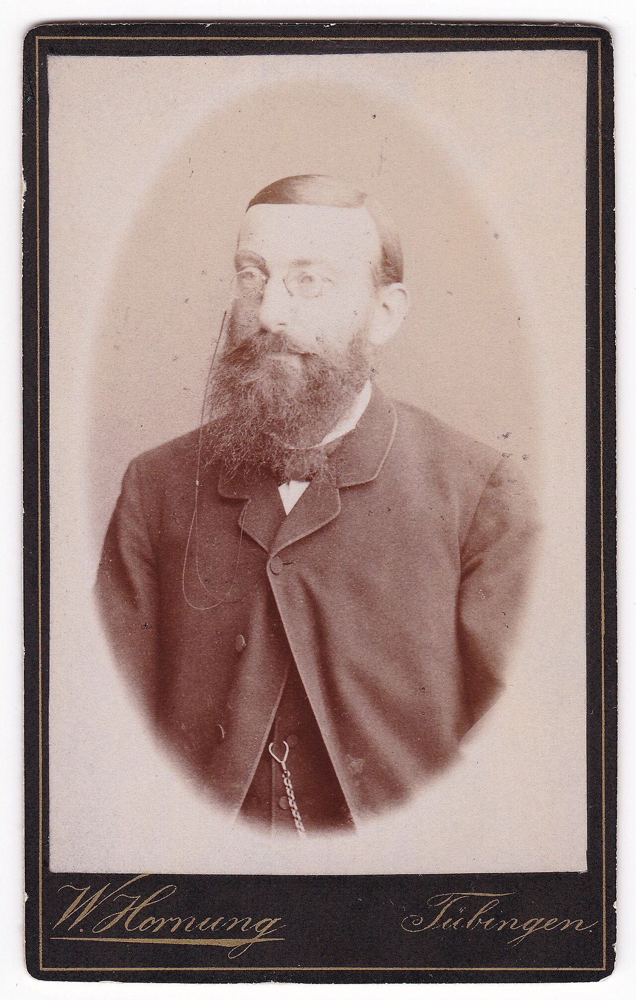

被动运输
本期导读
渗透作用 · 质壁分离 · 转运蛋白

视频原话 · 导读3 句
- 同学们好！这节课梳理人教版必修一第四章第一节——被动运输。6.6s
- 高考常考渗透装置的分析、质壁分离及复原实验，以及自由扩散和协助扩散的比较。8.5s
- 我们按八个考点梳理，每个考点都讲清楚怎么考、怎么做。5.5s
渗透作用的条件01#
水分子透过半透膜，从低浓度溶液 → 高浓度溶液扩散
条件①：半透膜
水能通过，蔗糖等大分子不能通过
条件②：浓度差
半透膜两侧溶液浓度不同
易错
浓度指物质的量浓度：质量分数相同时，葡萄糖溶液的物质的量浓度大于蔗糖溶液
视频原话3 句
- 考点一，渗透作用。水分子等溶剂分子透过半透膜，从低浓度溶液一侧向高浓度溶液一侧扩散，叫作渗透作用。11.2s
- 发生渗透作用有两个条件：一是要有半透膜，二是半透膜两侧的溶液具有浓度差。8.0s
- 易错：这里的浓度是物质的量浓度；质量分数相同的葡萄糖溶液和蔗糖溶液，葡萄糖溶液的物质的量浓度更大。10.7s
渗透装置分析02#
- 进入漏斗的水分子多于出来的 → 液面上升
- 液柱压力与浓度差作用平衡 → 液面停止上升
- 平衡时：水分子仍双向移动，进出速率相等
易错
平衡时漏斗内外浓度不相等，漏斗内仍高于烧杯（Δh 越大，说明浓度差越大）
视频原话4 句
- 考点二，渗透装置的分析。漏斗内装蔗糖溶液，烧杯中是清水，漏斗口封着一层半透膜。9.3s
- 单位时间内进入漏斗的水分子多于出来的，漏斗内液面上升。6.1s
- 液面上升到一定高度后停止：此时液柱的压力与浓度差的作用相互平衡，水分子进出达到动态平衡。9.7s
- 易错：平衡时漏斗内外浓度并不相等，漏斗内仍高于烧杯；水分子仍在双向移动，只是进出速率相等。10.4s
动物细胞吸水失水03#
解题方法
水往浓处流：先比较细胞内外浓度；动物细胞的细胞膜相当于半透膜
视频原话4 句
- 考点三，动物细胞的吸水和失水。动物细胞的细胞膜相当于一层半透膜。7.4s
- 外界溶液浓度低于细胞质浓度时，细胞吸水膨胀，甚至涨破；外界浓度高于细胞质浓度时，细胞失水皱缩。10.7s
- 两者浓度相同时，水分子进出平衡，细胞形态不变，所以静脉输液要用生理盐水。8.5s
- 考法：红细胞放入不同浓度溶液中的形态变化。解题方法：水往浓处流，先比较细胞内外的浓度。9.8s
原生质层04#
- 成熟植物细胞有中央大液泡
- 原生质层 ＝ 细胞膜 ＋ 液泡膜 ＋ 两层膜之间的细胞质
- 细胞壁全透性，伸缩性比原生质层小
易错
原生质层不含细胞液，也不含细胞壁；起半透膜作用的是原生质层
视频原话4 句
- 考点四，原生质层。成熟的植物细胞有中央大液泡，液泡内的液体叫细胞液。8.4s
- 细胞膜和液泡膜，以及两层膜之间的细胞质，称为原生质层，相当于一层半透膜。7.8s
- 细胞壁是全透性的，而且伸缩性比原生质层小。5.0s
- 易错：原生质层不包括细胞液，也不能把细胞壁算进去；起半透膜作用的是原生质层，不是细胞壁。9.7s
质壁分离及复原05#
- 制片，低倍镜观察紫色洋葱鳞片叶外表皮
- →0.3 g/mL 蔗糖溶液引流
- →观察：质壁分离
- →清水引流
- →观察：复原
解题方法
内因：原生质层伸缩性 ＞ 细胞壁；外因：外界溶液浓度 ＞ 细胞液浓度；三次观察形成前后自身对照
视频原话5 句
- 考点五，探究植物细胞的吸水和失水。常用紫色洋葱鳞片叶的外表皮，液泡有颜色，便于观察。9.6s
- 滴加0.3 g/mL的蔗糖溶液，原生质层与细胞壁逐渐分离，出现质壁分离，液泡变小、颜色变深。10.2s
- 再滴加清水，液泡逐渐变大，出现质壁分离复原。5.3s
- 整个实验用低倍镜观察三次，形成前后自身对照。5.4s
- 解题方法：质壁分离的内因是原生质层的伸缩性大于细胞壁，外因是外界溶液浓度大于细胞液浓度。9.8s
应用与自动复原06#
- 1判断死活能发生质壁分离的是活细胞
- 2估测浓度细胞液浓度介于刚好不分离和刚好分离的两种外界浓度之间
- 3自动复原一定浓度的 KNO3 溶液：先质壁分离，后自动复原
- 4K+、NO3− 被细胞吸收 → 细胞液浓度升高 → 吸水；尿素、甘油、乙二醇同理
易错
外界浓度过高，细胞失水过多死亡，不能复原；动物细胞无细胞壁，不发生质壁分离
视频原话4 句
- 考点六，质壁分离的应用。可以判断细胞的死活，死细胞不发生质壁分离；还可以估测细胞液浓度的范围。10.3s
- 把细胞放入一定浓度的KNO3溶液中，先发生质壁分离，随后会自动复原。7.2s
- 因为K+和NO3-可以被细胞主动吸收，细胞液浓度升高，细胞又吸水；尿素、甘油、乙二醇溶液中也会自动复原。12.0s
- 易错：外界溶液浓度过高，细胞失水过多而死亡，就不能复原；动物细胞没有细胞壁，不会发生质壁分离。10.2s
自由扩散与协助扩散07#
被动运输：顺浓度梯度，不消耗细胞内化学反应释放的能量
| 比较项目 | 自由扩散 | 协助扩散 |
|---|---|---|
| 运输方向 | 高浓度 → 低浓度 | 高浓度 → 低浓度 |
| 转运蛋白 | 不需要 | 需要 |
| 能量 | 不消耗 | 不消耗 |
| 实例 | O2、CO2、甘油、乙醇、苯 | 葡萄糖进入红细胞；水（水通道蛋白） |
解题方法
都是顺浓度梯度、不耗能；区别只看是否需要转运蛋白
视频原话4 句
- 考点七，被动运输。物质以扩散方式进出细胞，不需要消耗细胞内化学反应释放的能量，包括自由扩散和协助扩散。11.5s
- 自由扩散：通过简单的扩散作用进出细胞，如O2、CO2、甘油、乙醇、苯等。8.6s
- 协助扩散：借助膜上的转运蛋白进出细胞，如葡萄糖进入红细胞，水分子更多地借助水通道蛋白进出。10.0s
- 解题方法：两者都顺浓度梯度、不耗能，区别在于是否需要转运蛋白。7.1s
载体与通道蛋白08#
载体蛋白
只容许与结合部位相适应的分子或离子通过
每次转运都发生自身构象的改变
通道蛋白
只容许大小、形状、电荷相适宜的分子或离子通过
分子或离子不需要与通道蛋白结合（如水通道蛋白）
易错
协助扩散速率还受转运蛋白数量限制：随浓度差增大，速率增加到一定程度后趋于平缓
视频原话4 句
- 考点八，转运蛋白分为载体蛋白和通道蛋白两类。5.3s
- 载体蛋白只容许与自身结合部位相适应的分子或离子通过，每次转运时都会发生自身构象的改变。9.5s
- 通道蛋白只容许大小、形状和电荷相适宜的分子或离子通过，分子或离子通过时不需要与通道蛋白结合。10.2s
- 易错：协助扩散的速率除了受浓度差影响，还受转运蛋白数量的限制，所以曲线最后会趋于平缓。9.8s
易错速查✓
先自己判断，再点按钮查看对错与解析。
- 1渗透平衡时漏斗内外溶液浓度相等说法错误：漏斗内浓度仍高于烧杯
- 2原生质层包括细胞膜、液泡膜和细胞核说法错误：是两层膜及两层膜之间的细胞质
- 3质壁分离过程中细胞液浓度逐渐增大说法正确。
- 4动物细胞放入高浓度溶液会质壁分离说法错误：没有细胞壁，只会失水皱缩
- 5葡萄糖进入红细胞属于自由扩散说法错误：属于协助扩散
- 6分子通过通道蛋白时需要与之结合说法错误：不需要与通道蛋白结合
水往浓处流，顺浓度梯度不耗能！
视频原话 · 易错速查5 句
- 最后，用六道判断题检验一下。3.6s
- 判断一？错，漏斗内浓度仍然更高。判断二？错，原生质层是两层膜及其间的细胞质。10.1s
- 判断三？对。判断四？错，动物细胞没有细胞壁。6.5s
- 判断五？错，是协助扩散。判断六？错，不需要结合。7.2s
- 八个考点串成一条线：水往浓处流，被动运输顺浓度梯度、不耗能。我们下期再见！8.6s
图片来源
图片来源：Wikimedia Commons —— Wilhelm Hornung《Wilhelm Pfeffer (vor 1884)》Public domain
Wilhelm Hornung, Public domain